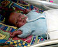

<!doctype html public "-//w3c//dtd html 4.0 transitional//en">
<html>
<head>
   <meta http-equiv="Content-Type" content="text/html; charset=iso-8859-1">
   <meta name="Author" content="Mike Carpenter">
   <meta name="GENERATOR" content="Mozilla/4.73 (Macintosh; U; PPC) [Netscape]">
   <title>Poppy's Progress</title>
</head>
<body text="#000000" bgcolor="#FFFFFF" link="#FF0000" vlink="#800080" alink="#0000FF">
&nbsp;
<table CELLSPACING=0 CELLPADDING=0 COLS=1 WIDTH="600" >
<tr>
<td>
<center></center>
<p>
<A HREF="index.html"><font face="Verdana"><font size=-1><font size=-1>Return to Poppy's Page</font></font></font></A>

<!-------------------Diary starts here------------------->

<a name="040801"></a><p><b><font face="Verdana"><font size=-1><font color="#FF9999">4th August 2001</font></font></font></b>
<br><font face="Verdana"><font size=-1><font color="#000000">Poppy coped very well with her time off the CPAP ventilator again, so she will continue to have 2 hours off out of every 12 for the time being. Today Poppy came out for a cuddle with a low-flow oxygen pipe called 'prongs' which attach to her nostrils and provide oxygen as required by her. It allows us to see her face much more easily. and helps her to keep up her oxygen saturation levels, whilst out of the incubator.</font></font></font>
<br>&nbsp<br>&nbsp
<a href="diary/poppy040801.html"></a>
<br>&nbsp

</a><p><b><font face="Verdana"><font size=-1><font color="#FF9999">3rd August 2001</font></font></font></b>
<br><font face="Verdana"><font size=-1><font color="#000000">Poppy has had a good day today. She was taken off the CPAP for over an hour today and had her first taste of milk from Sharon's breast. This evening her oxygen requirement was down to 24%, which is almost normal air.</font></font></font>
<br>&nbsp

<a name="020801"></a><p><b><font face="Verdana"><font size=-1><font color="#FF9999">2nd August 2001</font></font></font></b>
<br><font face="Verdana"><font size=-1><font color="#000000">Poppy took a great step forward today; she was taken off the CPAP ventilator for an hour. She coped extremely well and seemed very happy; at least she certainly wasn't very happy when the CPAP was put back on again at the end of her time off! The nurses are going to continue to take the CPAP away for an hour twice a day now, and then slowly increase the time off until she can come off completely. Sharon's milk will also be fortified with extra fats and vitamins and minerals to ensure that her diet helps Poppy to put on as much weight as possible.</font></font></font>
<br>&nbsp<br>&nbsp
<a href="diary/poppy020801.html"></a>&nbsp;&nbsp;&nbsp;&nbsp;&nbsp;&nbsp;&nbsp;&nbsp;
<a href="diary/poppy020802.html"></a>
<br>&nbsp

<a name="010801"></a><p><b><font face="Verdana"><font size=-1><font color="#FF9999">1st August 2001</font></font></font></b>
<br><font face="Verdana"><font size=-1><font color="#000000">Poppy has put on a couple of ounces and now weighs 2lb 9oz. She still has some mucus in her nose, which today caused her oxygen requirement to rise, but she is still very stable and is doing well.</font></font></font></font>
<br>&nbsp

<a name="310701"></a><p><b><font face="Verdana"><font size=-1><font color="#FF9999">31st July 2001</font></font></font></b>
<br><font face="Verdana"><font size=-1><font color="#000000">Poppy has had another good day and her milk has been increased to 9ml per hour. Her oxygen level is hovering around 32%, although it goes up when she gets hungry and while she is having her milk, but comes down again afterwards. Sharon had a lovely cuddle with her today and Poppy practiced sucking; on Sharon's fingertip!  Her oxygen requirement went down to 25% after her cuddle, so she must have enjoyed it.</font></font></font>
<br>&nbsp<br>&nbsp
<a href="diary/poppy310701.html"></a>
<br>&nbsp

<a name="300701"></a><p><b><font face="Verdana"><font size=-1><font color="#FF9999">30th July 2001</font></font></font></b>
<br><font face="Verdana"><font size=-1><font color="#000000">Poppy is doing well and continues to remain stable. She has lost a little weight (7g) since coming off the ventilator, because she is doing so much work breathing on her own. Her weight should pick up soon though, as she is digesting her milk well.</font></font></font>
<br>&nbsp<br>&nbsp
<a href="diary/poppy300701.html"></a>
<br>&nbsp

<a name="290701"></a><p><b><font face="Verdana"><font size=-1><font color="#FF9999">29th July 2001</font></font></font></b>
<br><font face="Verdana"><font size=-1><font color="#000000">Poppy continues to be stable today, and is still taking 8.5ml of milk per hour. This evening Mike was allowed to hold her for about 45 minutes, which she enjoyed a great deal.</font></font></font>
<br>&nbsp<br>&nbsp
<a href="diary/poppy290701.html"></a>&nbsp;&nbsp;&nbsp;&nbsp;&nbsp;&nbsp;&nbsp;&nbsp;
<a href="diary/poppy290702.html"></a>
<br>&nbsp


<!-------------------Diary ends here------------------->

<br>&nbsp;
<p>&nbsp;</td>
</tr>
</table>
<font face="Verdana"><font size=-1><font size=-1>Last updated 06/08/2001 16.30
</body>
</html>
